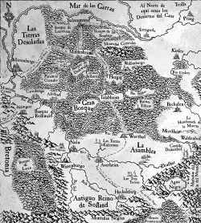
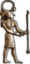
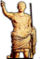

De: La Frikipedia, la enciclopedia extremadamente seria.
De: La Frikipedia, la enciclopedia extremadamente seria. De: La Frikipedia, la enciclopedia extremadamente seria.
| Creíble. Este artículo o sección es demasiado creíble para poder permitírsele el paso. Por favor, el autor, o alguien que pase por aquí, meta alguna locura humorística, para terminar de reírme. |

|
| De la serie imperios antiguos: | |||||
| Sacrum Romanum Imperium (Rusticam Romanum Lingua) Heiliges Römisches Reich (Rusticam Germanicum Lingua) | |||||
| |||||
| Lema: "Soborna y reinarás" | |||||
| Himno: "El antipapa"
| |||||
| 
| |||||
| Capital(es) | Aquisgrán | ||||
| Mayor ciudad | No hubo desde Federico II | ||||
| Lenguas oficiales | alemán, italiano, gabacho, holandés, hereje, checo, polaco, romance, sajón, austríaco, aragonés, bable, tacos. | ||||
| Religión oficial | El sexo | ||||
| Gobierno | Monarquía electiva mediante sobornos | ||||
| Imperator Augustus | Karl Franz | ||||
| Fecha de fundación | 962 | ||||
| Caída | 1806 | ||||
| Edad de oro | 1150 | ||||
| Periodo de Estancamiento o reseción | 1648 | ||||
| Máxima Extensión | Alemania, Italia, Francia y Holanda | ||||
| Forma de economía | Pillaje | ||||
| Estados que se despacho | Prusia, Bélgica, Holanda y Austria | ||||
| Población calculada | 16 millones de borrachines, algunos orcos | ||||
| Moneda | marco (no de cuadro) | ||||
| Zona horaria | Gtm+1 | ||||
| Legado(s) | el Protestantismo | ||||
| ¿Por que se vino abajo? | desde que murió Pipe II | ||||
| | |||||
El Sacro Imperio Romano Germánico fue un gran imperio formado de las ideas a varios príncipes alemanes de unirse para hacer frente a los polacos, a los húngaros y a las hordas del caos. El imperio fue un estado poderoso que sólo fue tal en la Edad Media y el Renacimiento, porque después cada cual hacía lo que le daba la gana y el emperador era como el presidente de la ONU, al que nadie hace ni caso. Algunos emperadores sanguinarios, como Federico Barbarroja y su hijo, extendieron el imperio por Italia, Holanda y otros sitios jugosos, pero las cosas nunca funcionaron. Los principales enemigos del imperio fueron los luteranos, el papa de Roma, los orcos, las hordas del Caos y Francia. El mayor emperador fue Karl Franz (conocido en España como Carlos I), que tuvo entre sus tierras, media Italia de Mussolini, Suiza y la zona del conde Drácula hasta el país del caudillo Kimi Räikkönen. El objetivo político principal del imperio en sus 900 años de existencia, fue que atravesarlo de norte a sur llevara el máximo tiempo posible. El récord lo consiguió Karl Franz con un mes.
El Sacro Imperio se ha metido en todos los cacaos de Europa, repartiendo leña en las cruzadas, en la querella de las investiduras (el papa jugando al risk contra el emperador para ver quien manda más), las guerras italianas de 1500 y pico, la guerra de los ochenta años (donde luchó Aragorn el los Tercios de Flandes), la guerra de los siete anos (donde Federico II de Prusia extendió sus fabricas de café irlandés por Alemania) y las guerras Bonapartistas, donde Napoleón I el Bajo prohibió el Imperio y lo cambió por una ridícula confederación de parcelas gobernadas por granjeros borrachos.
Todos saben en todo el mundo que el Sacro Imperio Romano, como puede observarse en el Medieval II Total War, fue en sus años mozos (1100 a 1600) el país más poderoso del mundo gracias a unidades con mucho ataque como los caballeros góticos o los teutónicos, pero en realidad, y a diferencia de Kosovo o Bosnia-Herzegovina, nunca fue una nación seria de verdad, ya que en vez de comunidades autónomas, se dividía en principados, condados, ducados o ciudades libres anarquistas marxistas gobernadas cada una por un príncipe (como Ernesto de Hannover, elector de Hannover y señor del whisky de Malta, ya que era comendador principal de la Orden de Malta). De hecho, los polacos eran más fuertes que el Sacro Imperio hasta 1939, cuando probaron los avances que introdujo el káiser-führer Adolf Hitler. Eso sí, el Sacro Imperio tenía el mejor ejército (sino no podrían haber ganado a los orcos y al Caos) y tenían el privilegio de nombrar papa propio en lugar del listillo de Roma, siempre a sus aires ordenando cruzadas a diario. En conclusión, el imperio era una banda de granjeros, banqueros judíos y caballeros gordos de trescientos países diferentes unidos por el odio a Francia, al papa de Roma y a los orcos, y amantes de la buena cerveza y de las armaduras brillantes.
Debido a los doscientos sesenta y siete años de sangrientas guerras entre los caballeros de la Orden Teutónica y las alabarderos de pico contra los temibles guerreros del Caos y los herejes luteranos, la organización del Sacro Imperio es un caos tremendo. El emperador le cae mal hasta a su familia, y no sólo al cuñado y al suegro, sino al hermano pequeño y al hermano mayor bastardo que no pudo reinar porque su padre no se había casado cuando el nació. Durante la guerra de los treinta años, cuando los herejes estaban en todas partes de Alemania, hasta en Florencia y todo, el emperador, que también odiaba y estaba en guerra con los otomanos se interesaba más por Austria y las aldeas colindantes que por Alemania, y por eso, los duques hacían los que les daba la ganas, desde ponerle sus nombres a las calles y a las plazas, hasta poner un impuesto por llevar bigote. El peor enemigo del emperador siempre fue el papa de Roma, que se la tenía jurada porque una vez, en un año que ya nos e acuerda ni la tía Pepa, un emperador descarriado nombró él a un cardenal, provocando un ataque de apoplejía al Sumo Pontífice. Federico Barbarroja estuvo apunto de darle bien por el culo al papa, pero los turcos malos lo impidieron.
Los estados imperiales eran los feudos, ciudades, castillos, aldeas, pueblos, naciones, principados, condados, ducados, marquesados o supermercados cuyos reyes, gobernantes y tal no tenían más jefe que el emperador. El emperador solía encontrar su muerte cuando llegaba la década de visitas de estos elementos, porque de estados imperiales había unos trescientos o más debido a la proliferación de granjeros ricos que iban al Caprabo a comprar un escudo nobiliario y a declarar su granja como una aldea feudal independiente. Hasta los obispos vieron la suya y también se nombraron príncipes, como por ejemplo el arzobispo-paladín de Maguncia, Ratzinger Z (Z de zübercanciller), o monseñor Rouco de Varela, comendador en jefe de Lieja. Los estados imperiales más poderosos eran tres:
Las cortes imperiales eran la cara aburrida del imperio (la divertida era la guerra, las cruzadas, las ejecuciones públicas de herejes. etc, etc...). En las cortes, se reunían un montón de personas para hacer leyes y decretos y votar a un candidato a emperador. Aunque todo parezca más fácil que hacer ecuaciones de segundo grado, en realidad era como hacer las de sexto grado, porque algún bastardillo se inventó una especie de clasificación rara que iba así:
Para ser nombrado emperador había que ser muy precavido, pues los electores, por desgracia, eran la mitad de derechas y la mitad de izquierdas, como siempre. Pero si tenían dinero, nada de eso era de importancia cabal. Para ser elegido, había que seguir la guía de Carlos I "Cómo se elegido emperador sin pasarlas canutas". Después de resumir los pasos y quitar las partes protagonizadas por el sexo y esas cosas que al papa no le gustan nada, se extraen tres conlusiones: si eres rico, vas bien encaminado, si eres de la zona del Sacro Imperio, aún vas mejor, y si eres has tenido al papa acojonado durante diez años, ya lo tienes en el saco. No olvidemos que Carlos I reunía los requisitos y por eso le dio por el culo al rey Paco I de Francia, amigo de los moros y deshonra de la cristiandad. De ahí que: 5.000 marcos basten para un voto, y 50.000 para una corona de oro con pideras preciosas, plata y rubíes de los de verdad verdadera.
Ha habido un total de seis guerras debido a las discrepancias entre señores feudales sobre que año fue el de inicio del Sacro Imperio. Unos dicen que fue en 911, cuando el vil conde Enrique el pajarero mató a doscientos polacos judíos que invadían Sajonia y proclamó el Reich. Otros dicen que fue en 962, cuando Otón I ahorcó en Blumberg al conde holandés Ulrich Von Liechtenstein por cagarse sobre el escudo de su familia. Otros juran sobre la tumba de sus suegras que fue en 955, cuando los húngaros fueron derrotados por los caballeros de la Waffen-SS (orden instaurada por San Bernardo de Claraval). Lo que importa es que llegaron los granjeros y los caballeros y obispos rellenitos para nombrar káiser nº 1 a Otón el majo. Los bizantinos, todos gays, no osaron atacar a Otón, que era un machote con un par de pelotas y seis mil sargentos acorazados, pero se quejaron al papa por el mésenller. Por desgracia, en vez de un reino, el pastiche ese era una alianza de civilizaciones entre francos (franquistas), sajones (los malos del rey Arturo), bávaros (los gordos que se emborrachan de cerveza en la oktoberfest) y alamanes (los alemanes con problemas de pronunciación de la "e"). Debido a esa gran mamarrachada política, Otón no podía nombrar sucesor a su hijo, Pepito el Tonto, y también hay que añadir que no era emperador, sino sólo un cutre rey. El primero que tuvo cojones para nombrarse emperador fue Conrado II el comunista, que derrotó una invasión de orcos. Por esas fechas se creó el consejo de electores, donde, por supuesto, estaba el papa de Roma, cuyo voto valía por 100. El maldito papa perdió en 1056, ya que Enrique IV gastó seis trillones de ducados en sobornar a los otros 100 electores, nombrando un cardenal (vale 1 voto), quedando las votaciones 101 a 100. El papa cogió un berrinche y lo excomulgó mientras lo llamaba "cabrón". Entonces, se escogió a otro rey, pero Enrique, como buen católico, decapitó a ese rey y mandó al papa a tomar por saco para nombrar a su propio pontífice, que le obedecía como un perrito.
Esta guerra entre el emperador y el papa no tuvo ninguna batalla, lo que hizo que fuera más aburrida que una película sin música. Al final, en el santo año de neustro señor 1122, el emperador Enrique V el asno y el papa Calixto II Picapiedra, cansados de escribirse cartas, excomulgarse y tratar de darse patadas en la entrepierna, firmaron la paz mediante una cuerdo según el que el emperador mordía el polvo. Enrique IV el asno fue ejecutado por tal patraña, pero gracias a Dios (o bien mirado, gracias al demonio), llegó Federico Barbarroja, famoso teutón medio corsario turco para arreglar las cosas. Se puso en faena en la década de 1150, destruyendo Milán, Cremona, la mitad de Polonia y otras localidades del viejo mundo. Sólo los guerreros del caos se le resistieron. Aún así, gracias a su vulgar séquito de lameculos (curas, condes y voulgueros con baguettes), inventó una docena de decenas de leyes concernientes a cosas de cabal importancia para las gentes del imperio, como las medias femeninas, las hachas de guerra o las caperuzas. En 1190, Federico recibió una llamada del papa pidiéndole que fuera a Tierra Santa a darle sirope de sangre a los infieles, y Federico aceptó encantado sin pedir nada a cambio pero recibiendo 23.433 marcos y 23 castillos italianos con lavabo decente (eso es con jabón perfumado) y sin ratas en las mazmorras. Mala suerte tuvo, que se ahogó y se fue al cielo.
En esos años tan maravillosos se fundaron muchas ciudades, como Múnich, Van Nistelroy o Metz, y casi no se ahorcaron criminales. Además, en 1198 aconteció un hecho decisivo para el destino del Sacro Imperio Romano, ya que, en San Juan de Acre, que está por allí abajo, en transilvados y valacos, entre ellos Vlad Tepes, alias el Conde Drácula). Pero esos asuntos vulgares y populistas no le interesaban a Federico II, el heredero de Barbarroja, más ocupado en escribir leyes en latín para fastidiar a los obispos. En esa época promulgó "Legicum lavaborum", sobre la adecuada conducta de los obispos en los lavabos públicos de Ratisbona. Por desgracia, a Fede II se le escaparon algunos papeles y los tacaños duques aprovecharon la jugada para nombrarse señores de sus tierras y robar así más dinero. El bueno del emperador murió sin descentientes mientras devoraba un delicioso pastel de nata montada y tiramisú que le habían preparado sus cocineros italianos.
Después de la trágica muerte de Perico II, el imperio tuvo gordo problemas políticos y económicos. Los dos únicos candidatos que se presentaron al consejo de príncipes electores eran el halcón preferido de Federico, llamado Pipo; y el conde vampiro Vlad Von Carstein. El primero era partidario de continuar con la política pajarera de su papi y conceder títulos y tierras imperiales a los halcones, gavilanes y azores (pero no a las águilas, nótese la ironía); el vampiro tenía ideas más brillantes, como organizar una cruzada imperial contra los otomanos para beberse toda su sangre y satisfacer de paso al Santo Papa de Roma. Los electores votaron todos en blanco. Entonces no hubo emperador durante algunos años de peste, guerras y movimientos gays en Génova, Lombardía y otras zonas del imperio. Ello llevó a los electores a inventar un sistema de elección mucho más corrupto que permitiese que saliera elegido alguien aunque todos votasen en blanco. Por este procedimiento se eligió emperador a Rodolfo de Japsburgo, que en un periquete, ya tenía controladas Austria y Suiza a base de cañonazos. Pero en 1303 las hordas del caos invadieron el imperio para destruir la cristiandad santa y católica (recordemos que las hrodas del caos habían destruido ya a los mongoles y a los timúridos).
Las tropas imperiales de arcabuceros, alabarderos y halcones de caza con metralletas vencieron en el campo de batalla y conquistaron Luxemburgo para el Sacro Imperio. Todo parecía andar bien, pero en ese día salieron del armario los husitas, unos herejes malvados que viajaban en carretas artilladas Ferrari asaltando y destruyendo posadas, pastelerías y escuelas privadas. Por suerte, al ídolo husita, el poeta gay Jan Hus, fue prendido por leñadores prusianos analfabetos, que lo quemaron vivo por navidad y se lo zamparon a él en lugar del tradicional "cochinillo" (en el Sacro Imperio el cochinillo era en realidad un jabalí de la selva negra de 900 kilos). Los prusianos fueron recompensados entonces con la presencia en sus tierras de varios caballeros teutones para ayudarlos en su difícil y sacrificado proceso de conversión al catolicismo. Las brujas de la zona pusieron fin a la conversión con un maleficio que transformó a los prusianos en carneros de seis patas y tres cabezas (conocidos popularmente como anticristos). Por ello, el emperador del día envió a tropas imperiales de bigotudos sargentos con sabuesos rabiosos para hacer la caza del siglo. Se hizo la caza, pero las brujas aún campaban a sus anchas por tierras prusianas, haciendo orgías y rituales paganos en los alrededores del castillo teutón de Köningsberg.
El emperador Carlete IV les envió un mensajero con una carta donde les daba a elegir entre el garrote vil (para luego ser quemadas) o patada en los cojones (para luego ser quemadas). Como convirtieron al mensajero en un anticristo, Carlete contrató a varios cazadores de brujas del ducado imperial de Hesse-Darmstadt para que le enviaran a las brujas trocito a trocito. Armados con rifles de precisión Dragunov, los caza-brujas vengaron a los leñadores prusianos y dieron Prusia por conquistada.
En 1506, el amo y señor de Flandes, un tal Felipe el Hermoso, un tío bueno que, viviendo en ese país de gays se aburría como una ostra, se había ido a mandar en España, murió de sífilis a causa de coleccionar (y usar) unos doscientos pares de amantes. Tras su muerte, su hijo Karl (Carlete), de seis años y retorcidas ideas, fue nombrado amo de Flandes y periferia. El niño tenía un mentón de récord guiness debido a que había presenciado algunos cientos de actos homogays en su palacio (¡hombre, si en el renacimiento los hombres y las mujeres eran casi iguales, o si no mirad los cuadros, las estatuas, los poemas...!), y se había quedado mucho rato boquiabierto (literalmente). Mientras crecía, a Karl le fueron cayendo premios divinos por su buena conducta. Primero la cayó España, ya que a su mamá Juana la Chiflada le faltaba un tornillo; después le cayó la Corona de Aragorn, al palmarla su yayo Fernando el Católico (el pobre hombre llevaba ya muchos años pateando culos franceses), y por último, su otro yayo, el emperador de Austria, también murió, así que en un pis pas, el joven Karl, que para desgracia de las admiradoras de su padre, que las había en toda Europa, al muchacho le salió el atractivo de que tenía a su cargo media Europa. Pero no todo eran risas y chistes malos. En las oscuras entrañas del inframundo, el vil rey Francisco I (no confundir con Francisco I de España), aburrido ya de que se contaran chistes sobre su nariz y harto de construir castillos en el Loira, decidió dejarse de tonterías e invadió Bretonia a sangre y fuego, matando a la dama del lago y arrasando con todo gracias a sus mercenarios ogros. El tonto de Paquito atacaba por donde menos daño hacía a Karl. Cuando se dio cuenta de su cagada, atacó el norte de Italia para evitar ser rodeado, pero perdió al no tener él alemanes con dos cojones y mala leche teutona.
Karl y Paco eran como perro y gato (en este caso sería dos gatos, porque eran ambos gays). Los dos querían ser emperadores del Sacro Imperio, pero ganó Karl, debido a que él tenía más territorios de donde sacar dinero: robó a los comunistas en Castilla, a los cazadores de piratas en Aragón, a los no sadomasoquistas en Flandes y a los musulmanes, que no podían salir de allí malparados. Con seis toneladas de oro sobornó a todos los príncipes electores, que lo votaron. Fueron tiempos difíciles: Martin Luther King, un negro revolucionario prohibió el catolicismo y comenzó a protestar allá a donde iba. Sus seductor séquito de campesinas alemanas convenció a muchos nobles germanos de que era mejor protestar que no hacerlo, y se pasaron al lado del culto Protestón (Quejica, como dicen en Frisia). Este culto neopagano-masón prohibía a los curas ser sobornados, beber como cosacos y meterse en camas grandes con aldeanas guapas, y también otras grandes obras de la cristiandad, como las bulas (que iban de perlas y te libraba de ir al infierno, aunque fueran caras) o meterle oro y plata en todos los pilares y pórticos a las catedrales tan chachis que había. Evidentemente, Karl no podía permitirlo y ordenó a un francotirador cargarse a Martin Luther King. Sus seguidores se fueron a otro sitio, pero volvieron en 1618. A fin de cuentas, el mandato de Karl fue el más mejor, ya que contrató a Miguel Ángel, a Rubens, a Botticelli y a otros artistas para crear grandes obras de arte para que todos los cortesanos pudiera hacerse la paja matutina y evitar así la entrada en palacio de plebeyas.
El imperio comenzó a caer en 1618, cuando los herejes de Luther King atacaron de nuevo y comenzó la Primera Guerra Mundial (pero sólo en Europa, como la Eurocopa), y duró 30 años. Perdió el Sacro Imperio, pero por suerte ganaron los franceses que eran católicos. El Imperio era un caos. Había entre 345 y 453 condados, repúblicas independientes de tu casa o ducados. El emperador era menos poderoso que ZP y nadie hacía nada de provecho. Sólo hicieron algo de provecho los franceses (de provecho para ellos, no para el Sacro Imperio), en concreto, un francés malo y enano llamado Napoleón, que mandó al carajo al Imperio y lo cambió por una broma del día de los Santos Inocentes que él llamó Confederación Germánica, un sitio lleno de parcelas de cultivos de lechuga y col de Bruselas mandadas cada una por un granjeros con escopeta, y así acabó la triste historia del I Reich. Sus pobres vecinos francesitos sólo tenían que soportar dos más.
|  Pueblos e Imperios de la Antigüedad  |
|---|
| Al-Ándalus • Antigua Grecia • Antiguo Egipto • Atlántida • Cultura Maya • Estados Confederados de América • Imperio Azteca • Imperio Bizantino • Imperio Británico • Imperio Huno • Imperio Inca • Imperio Español • Imperio Francés • Imperio Otomano • Imperio Romano • Imperio Ruso • Prusia • Reino suevo • Reino ostrogordo • Reino visigodo • Sacro Imperio Romano Germánico • U.R.S.S. |
Autor(es):